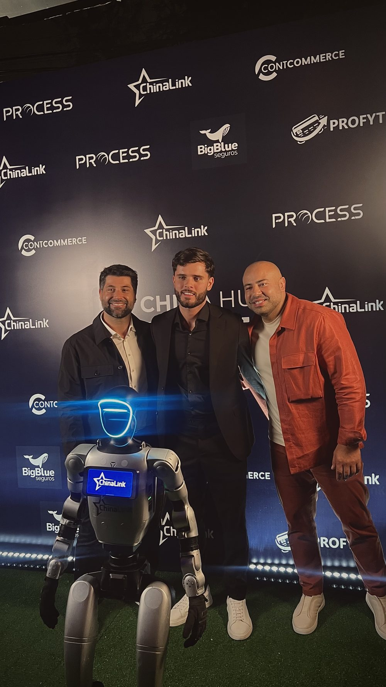

Anatomia de um agente de IA que funciona: instrução, memória, ferramentas e os limites que evitam alucinação
Todo agente que dá errado dá errado numa das quatro camadas. Este é o mapa que eu uso para construir — e para descobrir onde o agente do concorrente vai quebrar.

Um agente de IA que funciona tem quatro camadas: instrução, memória, ferramentas e limites. A instrução define quem ele é, o que pode e o que nunca faz. A memória guarda o contexto da conversa, os fatos daquele cliente e o conhecimento da empresa. As ferramentas permitem que ele aja no mundo real — consultar estoque, marcar reunião, registrar no CRM. Os limites dizem onde ele para e chama um humano. Quando um agente alucina, promete o que não existe ou some no meio do atendimento, quase sempre é uma dessas quatro que está mal feita — não o modelo que “ficou burro”.
Eu construo e opero agentes todos os dias, na minha agência e nos clientes. Vou abrir aqui a anatomia exata, camada por camada, com o que entra em cada uma, os erros que eu já paguei para aprender e o protocolo de teste antes de soltar para cliente de verdade.
- Instrução — quem ele é, como fala, o que decide sozinho.
- Memória — o que ele lembra da pessoa e o que a empresa sabe.
- Ferramentas — o que ele consegue fazer, não só falar.
- Limites — onde ele para, confirma ou chama gente.
Quais são as partes de um agente de IA?
Antes de entrar em cada camada, o mapa completo. Se você está avaliando uma proposta de agente de IA, peça para o fornecedor mostrar as quatro. Quem só mostra a primeira está vendendo um chatbot com nome novo — diferença que eu detalho em chatbot, automação ou agente de IA.
| Camada | Responde a pergunta | Sintoma quando falha |
|---|---|---|
| Instrução | Quem ele é e como decide? | Tom errado, sai do papel, responde qualquer coisa |
| Memória | O que ele sabe e lembra? | Repete pergunta, esquece o pedido, inventa dado |
| Ferramentas | O que ele consegue fazer? | Fala bonito e não resolve nada |
| Limites | Onde ele para? | Promete prazo, dá desconto, cria problema jurídico |
1. Instrução: o documento que define quem o agente é
A instrução (o system prompt) não é uma frase bonita tipo “seja atencioso e prestativo”. É um documento operacional. Na minha casa, toda instrução tem sete blocos:
- Papel: quem ele é, de qual empresa fala, com quem está falando.
- Objetivo único: qual é o resultado que conta. Agente com três objetivos concorrentes fica indeciso e enrola.
- Tom e formato: tamanho de mensagem, uso de emoji, se manda áudio, se manda link. No WhatsApp isso é meio caminho da naturalidade — assunto de agentes de IA no WhatsApp.
- O que ele decide sozinho: a lista explícita. Tudo que não está aqui, ele não decide.
- O que ele nunca faz: a lista mais importante do documento.
- Caminho de escalada: como e para quem ele passa a bola, com a frase pronta.
- Exemplos: três a cinco conversas boas e três ruins, com o motivo. Exemplo ensina mais que adjetivo.
O erro mais comum é instrução gigante e vaga. Vinte parágrafos de “seja humano” não valem uma linha de “se o cliente pedir desconto, diga que quem trata condição comercial é o time e ofereça agendar”. Instrução é regra operacional, não redação.
Agente ruim quase nunca é modelo ruim. É empresa que nunca escreveu, em lugar nenhum, como o atendimento dela deveria funcionar.
2. Memória: os três tipos que fazem diferença
“Memória” virou palavra genérica no mercado. Na prática são três coisas diferentes, e confundi-las custa caro:
- Memória da conversa: o histórico da thread atual. É o que impede o agente de perguntar o nome de novo na quarta mensagem. Tem limite de tamanho — conversa longa precisa de resumo, não de acumular tudo.
- Memória da pessoa: fatos duráveis daquele cliente — o que comprou, qual plano, em que etapa do funil está, o que ele já reclamou. Vive no CRM ou num banco próprio, não no prompt.
- Base de conhecimento: o que a empresa sabe — preços, políticas, prazos, garantia, objeções, diferenciais. O agente busca o trecho relevante e responde com base nele.
Essa terceira é a que mais previne alucinação. Um agente que responde “com base no documento X” erra muito menos do que um agente que responde “de cabeça”. E tem um efeito colateral bom: base enxuta e organizada reduz o custo por conversa, porque o agente carrega menos texto a cada mensagem.
Duas regras que eu não abro mão: base tem dono e tem data. Se ninguém é responsável por atualizar a política de troca, em três meses o agente está mentindo com a maior confiança do mundo — e a culpa vai cair na IA.
3. Ferramentas: o que separa um agente de um chat
Ferramenta é o que dá mão ao agente. Sem elas, ele é um assistente eloquente que não muda nada na sua operação. Com elas, ele consulta, escreve, agenda e cobra. Eu separo em dois grupos, e o tratamento é bem diferente:
- Ferramentas de leitura (consultar estoque, ver preço, checar status do pedido, ler agenda): liberação ampla. Errar aqui gera resposta ruim, não estrago.
- Ferramentas de escrita (marcar reunião, alterar pedido, emitir cobrança, enviar mensagem em massa): liberação estreita, com confirmação e registro. Errar aqui gera prejuízo e cliente bravo.
Três cuidados de engenharia que evitam dor de cabeça: toda ação de escrita precisa ser idempotente (se rodar duas vezes, não cria duas cobranças); toda ação precisa gerar log auditável (quem, quando, com que dado); e ação irreversível precisa de confirmação explícita do cliente ou de um humano do time.
E o mais importante: tire dado volátil do texto e coloque em ferramenta. Preço, prazo, disponibilidade e status de pedido não devem estar escritos na instrução. O agente consulta na hora. É a diferença entre um agente que erra o frete e um que acerta sempre. O passo a passo de montagem dessas conexões eu escrevi em como criar agentes de IA.
4. Limites: as regras que evitam alucinação e prejuízo
Limite é a camada que ninguém quer escrever e que decide se você dorme tranquilo. Os que eu coloco em todo agente que entra em produção:
- Permissão para não saber. A instrução precisa autorizar, com a frase pronta, o “vou confirmar isso com o time e te retorno”. Agente proibido de não saber inventa.
- Escopo fechado. Lista do que ele responde. Fora dela, escala. Nada de opinar sobre concorrente, política, saúde ou jurídico.
- Números só de fonte. Nenhum valor, prazo ou percentual sai da cabeça do modelo. Ou vem de ferramenta, ou não sai.
- Desconto e exceção comercial fora do alcance. Condição especial é decisão humana, sempre.
- Gatilhos de escalada imediata: reclamação grave, menção a advogado ou órgão de defesa, cliente irritado, pedido de cancelamento, valor acima de um teto.
- Teto de tentativas. Não entendeu duas vezes seguidas? Passa para humano. Insistir é o que faz o cliente odiar o robô.
Por que um agente de IA alucina — e como cortar isso
Alucinação é quando o agente responde com confiança algo que não é verdade. Na minha experiência de implantação, quase sempre existe uma causa de projeto por trás:
| Causa | Correção |
|---|---|
| A base não tem a resposta | Completar a base e mandar escalar quando não achar |
| A base está desatualizada | Dono e data de revisão para cada documento |
| Não existe ferramenta para o dado | Integrar a fonte real (estoque, agenda, ERP) |
| A instrução não permite “não sei” | Escrever a frase de recuo e treinar com exemplos |
| Escopo aberto demais | Fechar a lista de assuntos permitidos |
| Conversa longa, contexto estourado | Resumir a thread e reancorar os fatos-chave |
Repare que nenhuma linha da tabela diz “trocar de modelo”. Trocar o modelo resolve casos raros. Fechar as quatro camadas resolve a maioria.
Como testar um agente de IA antes de soltar pro cliente
Esse é o protocolo que eu sigo, sempre nessa ordem:
- Banco de conversas reais. Pegue de 30 a 50 atendimentos do seu histórico, com a resposta correta ao lado. Rode todos no agente e compare. Isso vira o seu teste de regressão: toda vez que mexer na instrução, roda de novo.
- Teste adversarial. Cliente confuso, mensagem só com áudio, pedido de desconto, reclamação pesada, pergunta fora do escopo, tentativa de tirar o agente do papel. Você quer ver ele recuar bem, não acertar bonito.
- Modo sombra. O agente sugere a resposta, o humano lê, corrige e envia. Uma a duas semanas disso mostram os buracos reais da base sem nenhum risco de imagem.
- Canário. Libere para uma fatia pequena do volume, com humano de plantão. Só depois abre tudo.
- Revisão semanal de escalas. Toda conversa escalada é matéria-prima: ou vira item de base, ou vira regra nova, ou confirma que aquilo é mesmo trabalho de gente.
O que medir depois que ele está no ar
Agente sem métrica é fé. As cinco que eu acompanho:
- Taxa de resolução autônoma — % de conversas encerradas sem humano.
- Taxa de escalada — e, mais importante, o motivo de cada escalada.
- Tempo até a primeira resposta — é aqui que a venda nasce ou morre, como eu detalho em SDR de IA.
- Erro factual por amostragem — leia 20 conversas por semana com olho humano. Não terceirize isso.
- Custo por conversa e por resultado — as duas juntas; a primeira sozinha engana.
Na minha operação, quem cuida do primeiro contato é a Friday, quem coordena os processos é a Eve e quem varre as conversas atrás de venda parada é o Sherlock. Os três nasceram assim: instrução escrita à mão, base curada, ferramentas ligadas ao que a empresa já usava e limites duros. Foi esse mesmo método que sustentou o case de ROI 10,48 que apresentei ao vivo em evento da Meta Business Partners — o agente não vende sozinho, mas ele impede que o dinheiro do anúncio morra esperando resposta.
- Instrução com papel, objetivo único, proibições e escalada escritos.
- Base de conhecimento com dono e data de revisão.
- Preço, prazo e estoque vindo de ferramenta — nunca do texto.
- Ação irreversível com confirmação e log.
- Banco de 30+ conversas reais aprovado.
- Duas semanas em modo sombra antes do canário.
Por onde começar
Se você está avaliando implantar um agente, faça na ordem: escolha um processo que hoje vaza dinheiro, escreva a instrução antes de escolher qualquer ferramenta, organize a base de conhecimento (é aqui que 70% do trabalho acontece e ninguém avisa), conecte só as ferramentas necessárias e defina os limites por escrito. Depois teste, meça e escale. O custo real dessa jornada eu abri em quanto custa implementar IA numa empresa, e o que dá para automatizar sem agente nenhum está em automação de processos com IA.
Se quiser que eu olhe o seu caso e diga onde estão as quatro camadas — e quais estão faltando —, é só me chamar.
Perguntas frequentes
Quais são as partes de um agente de IA?
Um agente de IA tem quatro camadas: a instrução, que define quem ele é, o que pode e o que nunca faz; a memória, que guarda o contexto da conversa, os fatos do cliente e a base de conhecimento da empresa; as ferramentas, que permitem agir no mundo real (consultar estoque, marcar reunião, registrar no CRM, emitir cobrança); e os limites, que dizem onde ele para e chama um humano. Falhou uma camada, falhou o agente.
Por que um agente de IA alucina?
Na prática das implantações, quase sempre porque ele foi obrigado a responder algo que não sabia. As causas mais comuns são: base de conhecimento incompleta ou desatualizada, instrução que não permite dizer “não sei”, ausência de ferramenta para consultar o dado real (preço, estoque, prazo) e falta de limite claro sobre o que está fora do escopo. Alucinação, na maioria dos casos, é sintoma de projeto malfeito, não defeito do modelo.
Qual a diferença entre memória e base de conhecimento em um agente de IA?
Base de conhecimento é o que a empresa sabe e não muda a cada conversa: preços, políticas, prazos, objeções, diferenciais. Memória é o que o agente lembra daquela pessoa: o que ela já perguntou, o que já comprou, em que ponto do processo ela está. A base evita que ele invente; a memória evita que ele repita perguntas e trate um cliente antigo como estranho.
Como evitar que o agente de IA invente preço ou prazo?
Tire preço, prazo e disponibilidade do texto e coloque em ferramenta. O agente não deve “saber” o preço; ele deve consultar a fonte oficial na hora de responder. Junto disso, a instrução precisa autorizar explicitamente a resposta “vou confirmar isso com o time” e proibir estimativas. Dado sensível que muda com o tempo nunca deve viver dentro do prompt.
Como testar um agente de IA antes de colocar no ar?
Monte um banco com 30 a 50 conversas reais do seu histórico e rode todas no agente, comparando a resposta dele com a resposta correta. Depois faça o teste adversarial: cliente confuso, pedido de desconto, reclamação, pergunta fora do escopo, tentativa de tirar o agente do papel. Em seguida rode em modo sombra, com o agente sugerindo e o humano aprovando, e só então libere para uma fatia pequena de clientes reais.